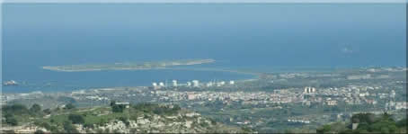
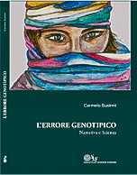
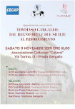
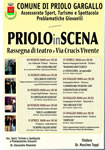
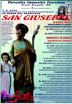
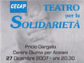
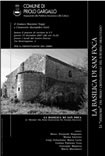
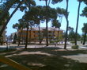
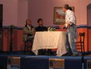
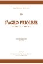

il Curriculum del Presidente

Cultura - Progettualità - Formazione - Informazione


Progetti realizzati dal CECAP
Album Foto Storiche
© Giona Tuccitto 2025
Cultura - Progettualità - Formazione - Informazione
Benvenuti nel sito Cecap.it
Articoli
|  | L’errore genotipico, narrativa e scienza. Autore Carmelo Susinni. Casa editrice Monieri . Questo libro narra l’infanzia, l’adolescenza fino alla maggiore età di un bambino, ed il contesto socio-culturale, ambientale, paesaggistico in cui vive. Continua... |
|  | Tommaso Gargallo, dal Regno delle due Sicilie al Risorgimento. Tommaso Gargallo, dal Regno delle due Sicilie al Risorgimento. Appuntamento con la storia, la storia di Priolo Gargallo e il suo fondatore Tommaso Gargallo, dal Regno delle due Sicilie al Risorgimento. La storia prestigiosa di un feudo, che deve essere ancora conosciuta, valorizzata e tramandata alle future generazioni. |
| Priolo in Versi - Premio Letterario di Poesia. Serata di grande cultura per le bellissime poesie declamate dai poeti in una sala gremita di persone, i cui versi, che hanno trattato importanti problematiche sociali, hanno coinvolto il pubblico suscitando non poche emozioni | |
| Via Crucis vivente Si è svolta sabato 15 marzo dalle ore 19,00 alle ore 21,30 la Via Crucis Vivente. La rappresentazione scenica di alcuni momenti della vita di Gesù, dal battesimo di Giovanni alla crocifissione. Circa 100 tra attori e comparse, tutti in costumi d’epoca e come scenografia le piazza e le strade di Priolo Gargallo. | |
|  | Priolo in Scena: Rassegna di Teatro Riapre il sipario della stagione teatrale, che come ogni anno, vede in scena alcune compagnie della Provincia siracusana. Quest'anno, inoltre, potremmo assistere anche alla fantastica "Via Crucis Vivente" che si svolgerà in occasione della S. Pasqua. Non resta che ricordare gli appuntamenti e godersi lo spettacolo. |
|  | Festa di San Giuseppe 2008 Quest'anno con l'arrivo anticipato della S.Pasqua, i festeggiamenti in onore di S. Giuseppe si svolgeranno Domenica 30 Marzo.Pertanto tutti i cittadini, sono invitati a preparare dei doni tradizionali da offrire in onore del Patriarca. |
| 20° Anniversario del Corpo di Polizia Municipale di Priolo 16/01/2008 Continua... | |
| Ringraziamenti per la serata di beneficenza Un grazie di cuore a tutte le persone che hanno partecipato alla serata teatrale di beneficenza che si è svolta nel centro diurno per anziani.... Auguro a Voi tutti un felice Anno Nuovo di pace e serenità. Carmelo Susinni | |
|  | Teatro per la solidarietà - 27 Dicembre 2007 Il 27 Dicembre presso il Centro Diurno per anziani a Priolo, la Compagnia Teatrale "Arte Fatti" di Palazzolo Acreide presenterà la commedia in 3 atti "Una truffa ben riuscita". |
|  | Presentazione libro "La Basilica di San Foca" Giorno 15 Dicembre presso i locali del centro diurno di via Mostringiano 2, si terrà la presentazione del libro "La Basilica di San Foca". |
| La Sicilia: "Quasi una notte da Oscar per il premio Martoglio" 23/09/2007 Continua... | |
| 4° Premio Letterario Teatrale "Nino Martoglio", serata finale. Sabato 15 Settembre si è conclusa con la serata dedicata alla premiazione, la quarta edizione del premio letterario teatrale Nino Martoglio, la rassegna di teatro organizzata e ideata dal Cecap con il patrocinio del comune di Priolo Gargallo. | |
| Formare per riqualificare e valorizzare il personale della pubblica amministrazione. Istituire una struttura organizzativa dedicata alla formazione del personale nel comune di Priolo Gargallo, uno tra i tanti progetti futuri che il Cecap intende realizzare per meglio rispondere alle esigenze sempre più diversificate dei cittadini. | |
| Ritorna il Premio Letterario Teatrale con il pubblico sempre più numeroso Ritornano ad esibirsi, per il quarto anno consecutivo le compagnie amatoriali teatrali, nelle rassegna del Premio Letterario Teatrale dedicata al famoso autore, commediografo e padre del teatro siciliano Nino Martoglio, protagonista principale il pubblico priolese sempre più numeroso ed attento. | |
| 4° Premio Letteraio Teatrale "Nino Martoglio" Siamo giunti alla quarta edizione del "Premio Letterario Teatrale Nino Martoglio" Città di Priolo Gargallo, abbiamo voluto che in questi anni, in sinergia con l’Amministrazione Comunale, il nostro teatro fosse vita per la città, un luogo dove non si va soltanto a vedere uno spettacolo, ma un luogo dove, meglio che altrove si sviluppa la socializzazione e la convivenza civile. | |
| Progetto "Educazione alla Legalità" - 26 Maggio 2007 Si è svolto in data 26 maggio 2007 nei locali del Centro Diurno per Anziani, il convegno sul tema “Educazione alla legalità e alla convivenza democratica” presenti gli alunni del 1° Istituto Comprensivo Danilo Dolci , del 2° Istituto Comprensivo i dirigenti scolastici, tutto il personale docente ed una rappresentanza di genitori. Nel corso del convegno sono stati proiettati i grafici relativi ai risultati del questionario somministrato in forma anonima agli alunni dei due istituti, commentati dalla Dott.ssa Sabrina Gallo. | |
|  | Finalmente riapre La Pineta - 24/05/2007 Uno dei luoghi più cari ai Priolesi è forse la Pineta. Chi di noi da piccolo non è andato lì almeno una volta a giocare? chi non ha condiviso con quei pini gli sguardi e i baci del primo amore ? La Pineta ha un posto d'onore tra i nostri ricordi, è uno di quei luoghi a cui si pensa con un certo affetto ed anche un pizzico di nostalgia. Ok, vi starete chiedendo il motivo di tutta questa sviolinata; ebbene Domenica sono tornato in pineta e finalmente l'ho vista come non ricordavo da tempo. |
| Carta europea dell'acqua Promulgata il 6 Maggio del 1968 a Strasburgo dal Consiglio d’Europa è ancora scarsamente conosciuta e osservata anche dai maggiori responsabili delle condizioni e dei pericoli che vi sono accennati, | |
|  | Gli alunni del 1° Istituto comprensivo "D. Dolci" a teatro. Come previsto nel progetto "Rassegna di teatro" del Cecap, mercoledì 18 Aprile scorso alla ore 10,00 gli alunni del 1° istituto comprensivo Danilo Dolci hanno assistito nei locali del centro diurno per anziani di Priolo Gargallo, alla commedia "Il condominio" rappresentata dalla compagnia teatrale L’Allegra Brigata di Augusta. |
| Progetto Legalità presentato agli Istituti Comprensivi di Priolo QE’ stato presentato sabato 14 aprile 2007 agli alunni dei due Istituti comprensivi Danilo Dolci e A. Manzoni di Priolo Gargallo il progetto Educazione alla legalità realizzato dall’Associazione culturale Cecap con il patrocinio del Comune di Priolo Gargallo Assessorato Pubblica Istruzione e della Presidenza del Consiglio Comunale. | |
| Progetto di educazione alla legalità Sabato 14 Aprile 2007, verrà presentato nelle scuole di Priolo Gargallo il progetto “Educazione alla legalità”, realizzato dall’ Associazione Culturale Cecap con il patrocinio del Comune di Priolo Gargallo Assessorato alla Cultura Pubblica Istruzione e Presidenza del Consiglio Comunale | |
| Teatro: Il Condominio Tutti sappiamo quali siano la problematiche relative alla convivenza in un condominio, i bambini che giocano a palla, la signora che fa gocciolare l’acqua dei panni stesi, i rumori, le porte che sbattono, i bambini che piangono di notte, i vasi sul balcone etc. Questi alcuni esempi, ma andare a finire in tribunale per una gallina, la cosa è alquanto buffa ma seria. Ne vedremo delle belle. | |
| Anche le scuole in teatro Nel progetto rassegna di teatro sono stati previsti dei turni di mattina per coinvolgere gli alunni delle scuole. Infatti il 14 Marzo scorso, gli alunni del 2° Istituto Comprensivo "A. Manzoni", hanno assistito nei locali del centro diurno per anziani di Priolo Gargallo alla commedia "Mio marito cocco di mammina", rappresentata dalla compagnia Gruppo amici del teatro di Augusta. Gli alunni, accompagnati dal personale docente, hanno seguito con molto interesse la commedia brillante e carica di significato etico-sociale. | |
| “U strammatu” di Padre Francesco Amato. Queste note autobiografiche, quasi un diario spirituale che l’autore stesso per noi ha voluto scrivere, attraverso il racconto di fatti e vicessitudini ci rivelano lo spessore umano di questo uomo, di questo sacerdote che in tutto si è distanziato dalla mediocrità e dal conformismo. | |
| "Priolo Gargallo, da borgo feudale a centro industriale" - di Giuseppe Mignosa. I temi trattati da questo volume, prospettano una panoramica che spazia dall’analisi del territorio e della società, alla storia, all’archeologia, all’economia, alla politica ed all’amministrazione. | |
|  | L' Agro Priolese Vol. 5 - di Luigi Sebastiano Maria Carta Il libro racconta 4000 anni di storia narrati con l’intento di far conoscere la storia dell’Agro Priolese, con fatti e notizie per lo più sconosciuti. Con questo si scoprirà di vivere in una terra non solamente afflitta dall’inquinamento, ma anche ricca di contenuti storici, paesaggistici, architettonici, archeologici, naturali ed ambientali di notevole spessore. |
| Film "Nassiriya" su Canale 5 Questa sera su Canale5 andrà in onda la seconda parte del film “Nassiriya”. Esso racconta la storia di alcuni militari italiani deceduti a Nassiriya (Iraq) durante una missione di pace. Noi per l’occasione, vogliamo ricordare a tutti che il sacrifico di questi uomini è stato grande e non bisogna mai dimenticare che purtroppo sul pianeta Terra ci sono tantissime guerre e muoiono molti innocenti fra cui i nostri soldati. | |
| Rassegna di teatro riservata a compagnie e gruppi teatrali amatoriali. Progetto ideato e organizzato dalla associazione culturale CECAP con il patrocinio del Comune di Priolo Gargallo. |
Progetti realizzati dal CECAP
Album Foto Storiche
© Giona Tuccitto 2025